From a predict_proba call in a notebook to Triton and KServe on a GPU.
Every inference concept is introduced from first principles, then shown with a real measurement from this project.
For ML engineers who have trained models but never served one.
Gleb Lukicov · github.com/glukicov/ltm_serve · slides produced with SlideOps
What TabFM is; why its masks make a cache exact.
Latency, percentiles, GPU timing, precision, noise floors.
Context cache, batching members, overhead, compilation.
Queueing, batching, open-loop load tests, Triton.
KServe, KEDA, cold starts, bottlenecks that move.
Principles, capacity model, glossary, further reading.
Part 3 of a series on TabFM, Google's tabular foundation model:
Assumes transformers and PyTorch. Assumes no serving, GPU or Kubernetes experience.
Every number was measured in the repo. The L4 is the reference for serving numbers; the M4 laptop was under swap pressure, so its latencies show trends, not SLOs.
Validated, not assumed: the cache matches stock TabFM to ≤3e-6 in fp32 on CPU, MPS and CUDA with 100% of labels identical, and both serving stacks run and agree under Docker, kind + KServe and GKE + KServe.
What TabFM is, and the one property of its attention masks that makes serving it fast and exact.
| Training or a notebook | Online serving | |
|---|---|---|
| Unit of work | epochs over a dataset | one request, often a single row |
| What you measure | loss, accuracy, time per epoch | latency percentiles, requests per second, cost per request |
| Who waits | you, once | every user, on every call |
| Batch size | chosen for convergence and memory | whatever traffic arrives, merged by the server |
| Start-up | load once, run for hours | every new replica pays a cold start |
| Failure looks like | a slow experiment | a missed latency target, dropped requests |
SLO (service level objective): a target the service promises, such as p99 latency < 150 ms. The capacity model at the end of this deck is built around exactly that target.
Key idea: the trained model fixes what the predictions are; serving is about delivering those same predictions within a latency budget, at a cost. Every optimisation in this deck is checked against unchanged predictions.
fit() trains nothing: it fits encoders and stages the training table.
predict_proba() feeds training rows + query rows through a transformer, and query rows read labels off
the training rows, the way an LLM uses few-shot examples.
1.64B parameters: 6.6 GB in fp32, 3.3 GB in bf16. Almost all of it is a 24-layer in-context encoder at width 2048.
Cell embedder, column set-transformer (256 inducing points), row transformer, in-context encoder. Stock runs 32 ensemble members, one per forward pass.
Stock predict_proba sends n_train + n_query rows through all 24 layers for every request.
Key idea: read the model code before designing the server. Everything that follows came from reading tabfm/src/pytorch/model.py.
In an LLM
In TabFM
| LLM KV cache | TabFM context cache (this project) | |
|---|---|---|
| Cached | K, V of past tokens, per layer | K, V of training rows per layer, plus column inducing-point states, per ensemble member |
| Built | incrementally, per request | once per table, shared by every request |
| Exact because | the causal mask | keys masked to training rows (fp32: ≤3e-6 vs stock) |
Key idea: look for computation whose inputs don't depend on the request. When a mask guarantees it, caching is exact, not an approximation.
The column set-transformer's inducing points and the in-context encoder attend to training rows only; every other operation is per row.
1. Why does stock TabFM get slower as the training table grows, even for a 1-row request?
Every call runs training rows plus query rows through all 24 layers, so the cost scales with the context, not with the request.
2. Which property makes it safe to put requests from different users into one batch?
Query rows never attend to each other (keys are masked to training rows), so a row's output can't depend on its batch-mates.
3. What do an LLM's KV cache and this context cache share, and how do they differ?
Both store K and V that later computation reuses. An LLM cache grows per request as tokens are generated; the context cache is built once per table and shared by every request.
Try it: uv run pytest -m slow compares the cache with stock TabFM on real penguins data (downloads 6.6 GB of weights once). Read tests/test_context_cache.py to see what “exact” is checked against.
Every rule the benchmark harness enforces caught a real mistake during the project.
Latency: time from sending a request to receiving its answer, as the client sees it. Measured for every request and reported as percentiles (next slide).
Throughput: completed requests (or rows) per second. A property of the whole system under a given load, not of one request.
| Cached forward on the L4, reduce-overhead | p50 latency | Rows per second, run back to back |
|---|---|---|
| 1-row request | 28.3 ms | ~35 |
| 16-row request | 32.0 ms | ~500 |
Worked example: 16× the rows for +13% latency. While the GPU has spare capacity, doing more work per call buys throughput almost for free. That is why batching pays (section 4).
Offered vs achieved load: offered is the rate clients send; achieved is the rate that completes. When achieved falls below offered, the system is saturated and a queue is growing.
Key idea: optimise for latency and throughput separately: a change can help one, both, or trade one for the other.
p50 (median): half of the requests were faster than this. What a typical user sees.
p99: 1 request in 100 was slower. What your unluckiest regular users see, and what SLOs are written on.
max: the single worst request. Useful for spotting stalls, but too noisy to plan with.
| 1× L4, eager, 160 req/s offered | p50 | p90 | p95 | p99 | max |
|---|---|---|---|---|---|
| FastAPI | 314 ms | 414 ms | 542 ms | 673 ms | 740 ms |
| Triton, 1 instance | 273 ms | 340 ms | 353 ms | 380 ms | 611 ms |
Same median, different tail: the medians differ by 15%, the p99s by 77%. FastAPI parses JSON in the model's Python process, so some requests wait behind that work (section 5).
Why tails dominate: a page that makes 100 backend calls waits for the slowest one. If 1% of calls are slow, 1 − 0.99100 ≈ 63% of pages hit at least one (Dean and Barroso, The Tail at Scale).
Key idea: averages hide queueing and hiccups. Look at p99 next to p50, and at the gap between them.
What a naive timer measures: wrapping a GPU call in time.perf_counter() measures how long it took to queue the work, not to do it.
Hidden syncs: .cpu(), .item() or printing a tensor wait for the queue to drain, so a forward's cost can show up on a later, innocent line.
The fix: call torch.cuda.synchronize() (or the MPS equivalent) before reading the clock. The next slide shows the harness doing exactly that.
Why this matters later: launching is CPU work. If the kernels are small, the GPU finishes each one before Python has launched the next, and sits idle. That idle time is the overhead that compilation removes in section 3.
Key idea: on a GPU, a timing without a synchronise is a timing of Python, not of the model.
def synchronize(device: torch.device) -> None:
if device.type == "cuda":
torch.cuda.synchronize()
elif device.type == "mps":
torch.mps.synchronize()
…
for _ in range(warmup):
fn()
synchronize(device)
out = []
for _ in range(repeats):
t0 = time.perf_counter()
fn()
synchronize(device)
out.append(time.perf_counter() - t0)
return out
1. Load once, warm up, synchronise. Without a sync, GPU timings measure only the kernel launch. Warm-up calls absorb allocator growth and kernel selection.
2. Percentiles over repeats, not single runs.
3. Quality next to latency. Accuracy and log loss on held-out rows: a speed-up that changes predictions isn't a speed-up.
4. A noise floor before claiming exactness (next slide).
5. Isolate the machine. A process from another session inflated the first Mac sweeps by 2–7× (cached 1-row: 879 ms instead of 128 ms). Kept as *_contended.parquet and re-run.
| Format | Bits: sign / exponent / fraction | Range | TabFM weights |
|---|---|---|---|
| fp32 | 1 / 8 / 23 | ±3.4 × 1038 | 6.6 GB |
| bf16 (brain float) | 1 / 8 / 7 | same as fp32 | 3.3 GB |
| fp16 | 1 / 5 / 10 | ±65,504 | not used here |
Why bf16: fp32's exponent range in half the bytes, so values don't overflow the way fp16 can, and modern GPUs have fast kernels for it. The L4 serving numbers are all bf16.
Why outputs move: libraries pick different kernels and summation orders for different batch shapes. Floating-point addition isn't associative, so identical maths rounds differently, and bf16 rounds more coarsely.
What follows: “exact” has to be defined against a measured noise floor (next slide). And precision is also a speed choice per device: on an ARM CPU bf16 was 5–11× slower (section 3).
Key idea: in low precision, compare an optimisation against the model's own run-to-run noise, not against zero.
In bf16, stock TabFM's own outputs change when you only change which rows share a batch. Mathematically nothing changed (queries never attend to each other), so the difference is floating-point kernel noise. Judge the optimisation against that floor.
| Comparison | Precision · device | max |Δp| | Label agreement |
|---|---|---|---|
Stock vs stock, only batch composition changed (bench.bf16_noise_floor) | bf16 · L4 | 0.013 | – |
| Cached vs stock | bf16 · L4 | 0.034 | 100% |
| Cached vs stock | fp32 · CPU / MPS / L4 | 2.6e-6 / 2.2e-6 / 3e-6 | 100% |
Same order of magnitude as stock's own noise, with 100% label agreement: that is how "exact up to floating point" was established rather than assumed.
tests/test_context_cache.py compares against stock on penguins (categorical columns) and a padded 23-feature, 4-class task, members batched and one at a time.
It also checks that predicting rows together equals predicting them one by one: the test that licenses exact dynamic batching later.
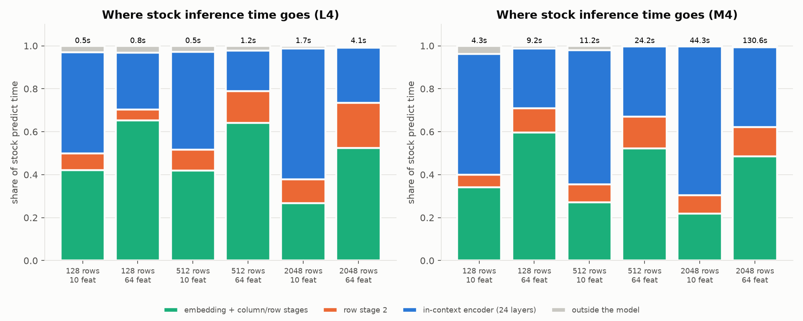
What it shows: share of stock predict time per top-level module (timed with hooks), for 3 context sizes × 2 widths. Totals above bars.
10 features: the in-context encoder (blue) takes 45–61% of the time on the L4, 56–69% on the M4.
64 features: column and row stages take 69–78%, because width enters the row transformer quadratically and the column stage linearly.
Key idea: sweep each axis (rows, features, request size, members) separately. A single benchmark shape hides which stage to attack.
1. You time model(x) on a GPU without synchronising and get 2 ms. What did you measure?
Mostly the time to queue kernels. The GPU work finishes later and is charged to whichever line synchronises next.
2. Compiled FastAPI at 240 req/s: p50 117 ms, p99 2,943 ms. What does that gap tell you?
Most requests are served quickly but some wait in a growing queue: the service is at or past saturation, even though the median looks healthy.
3. Cached and stock outputs differ by 0.034 in bf16. Is the cache wrong?
Not by itself: stock differs from itself by 0.013 when only batch composition changes, labels agree 100%, and in fp32 the gap is ≤3e-6.
Try it: uv run ltm-serve bench noise_floor stages --device mps (or --device cuda), then uv run ltm-serve plots. Results land in results/*.parquet.
Cache what doesn't change, batch what's independent, compile what's left, and choose precision per target.
…
icl = model.icl_predictor
r = r + _y_encode(icl, y, dtype)
kv: list[tuple[Tensor, Tensor]] = []
for blk in icl.tf_icl.blocks:
xn = blk.pre_attn_ln(r)
k, v = _project_kv(blk.attn, xn)
kv.append((k, v))
r = r + blk.post_attn_ln(_attend(blk.attn, xn, k, v))
r = r + blk._ff(r)
…
…
icl = model.icl_predictor
for blk, (k, v) in zip(icl.tf_icl.blocks, cache.icl_kv, strict=True):
r = _block_with_kv(blk, r, k[sl], v[sl])
out: Tensor = icl.decoder(icl.ln(r))
return out
What's cached per member: inducing-point states of each column set-transformer block (2 stages × 3 blocks) and the K/V projections of the training rows in each of the 24 in-context layers.
Per request: query rows go through the per-row stages and cross-attend into those caches. Cost becomes O(query rows × context rows) in attention.
Wrap, don't fork: CachedTabFMClassifier reuses the fitted classifier's preprocessing, ensembling, class-shift correction and logit averaging.
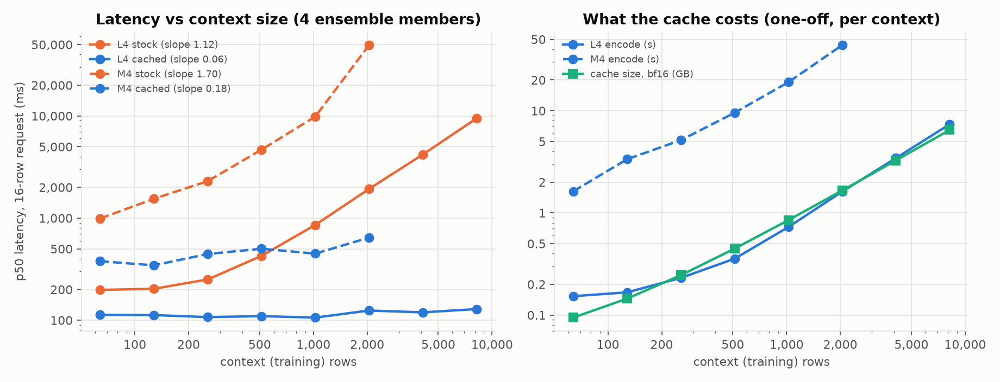
Left: p50 of a 16-row request, 4 members. L4 stock slope 1.12 vs cached 0.06. At 8,192 rows: 9.47 s → 129 ms (74×).
Why stock is ~linear on the L4: at width 2048 the feed-forwards dominate until attention's T² term catches up, around 10⁴ rows. The M4's slope is 1.70: MPS falls back to an unfused attention kernel for boolean masks.
Right, the price: the one-off encode and the bf16 cache both grow linearly with context: 7.4 s and 6.49 GB at 8,192 rows on the L4.
Key idea: a cache trades compute for memory. Latency stops growing with the table; memory starts (next slide).
| Context rows | L4 stock | L4 cached | Speed-up | One-off encode (L4) | Cache (bf16) |
|---|---|---|---|---|---|
| 64 | 198 ms | 113 ms | 1.8× | 0.15 s | 94 MB |
| 512 | 427 ms | 110 ms | 3.9× | 0.36 s | 447 MB |
| 2,048 | 1,930 ms | 125 ms | 15× | 1.6 s | 1.65 GB |
| 8,192 | 9,470 ms | 129 ms | 74× | 7.4 s | 6.49 GB |
In bf16: 24 layers × K and V × 2048 dims × 2 bytes, plus the inducing-point states. 8,192 rows × 32 members would be ~52 GB, more than twice an L4's memory.
The speed-up grows with context size, and so does memory. Budget contexts in bytes, evict by LRU, and route requests to the replica that already holds a context's cache.
Key idea: a cache's memory grows with what it stores (context rows × ensemble members), so budget and evict contexts by bytes, not by count.
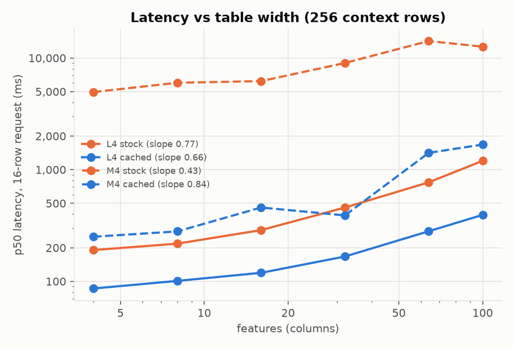
What it shows: p50 of a 16-row request at 256 context rows, sweeping table width from 4 to 100 features.
L4 cached: 86 → 394 ms.
L4 stock: 191 → 1,201 ms.
Why the cache can't flatten this: the row and column stages run per query row, and their cost grows with width.
Key idea: benchmark at your real table width. A narrow synthetic table flatters every number.
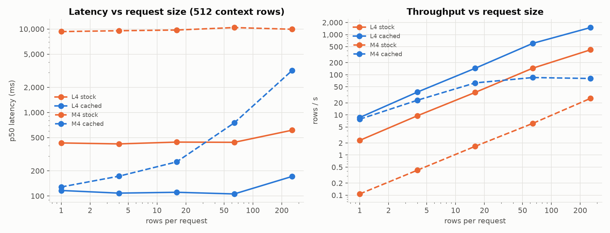
Left: at 512 context rows, L4 cached latency stays at 105–116 ms from 1 to 64 rows per request and reaches 171 ms at 256.
Right: that flat region turns into throughput: at 256 rows the L4 cached path does 1,497 rows/s vs 418 rows/s for stock.
The M4 (dashed) has no flat region: cached latency climbs from 1 row on and throughput plateaus around 80 rows/s. Batching gains are device-specific.
Key idea: when the forward is flat in batch size, merging requests is nearly free. Classes, by contrast, cost nothing in latency (only decoder width changes).
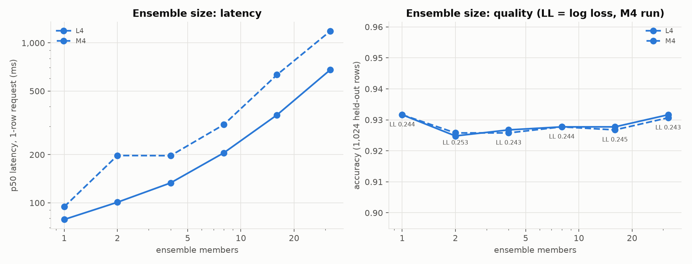
Setup: a deliberately harder synthetic task (512 rows, 20 features, 5 classes), 1-row requests, 1,024 held-out rows for quality.
Latency (L4): 79 ms with 1 member → 678 ms with 32.
Quality: accuracy 0.925–0.932 and log loss 0.243–0.253 at every size.
Earlier attempt: the first task was too easy (accuracy flat at 97%). Made harder with class_sep=0.5 plus log loss: still flat, a real finding.
Key idea: the default of 32 is tuned for leaderboard accuracy on diverse benchmarks. Measure quality against ensemble size on your real data before paying for it.
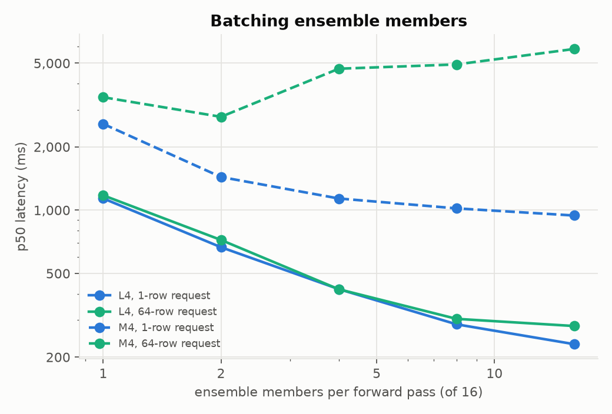
What it shows: 16 members, varying how many go through one forward pass (library default batch_size=1).
L4, 1-row request: 1,137 ms one at a time → 230 ms all in one forward (5×). 64-row requests follow the same curve.
Why: the GPU is mostly idle between small kernels, so fewer, larger kernels win. The M4 (dashed) is noisier; its 64-row line even rises.
Key idea: audit library defaults. A notebook-friendly default can be a serving anti-pattern.
1. Compute-bound: the GPU is busy with large matrix multiplications. Helps: faster kernels, lower precision, a bigger GPU.
2. Memory-bound: time goes into moving data, for example many small element-wise ops each reading and writing a tensor. Helps: fusing operations into one kernel.
3. Overhead-bound: the GPU finishes each kernel before Python launches the next. Helps: fewer, larger kernels, compilation, CUDA graphs.
Give the model more work and watch latency. If it grows in proportion, you are compute-bound. If it barely moves, you are paying a fixed cost per call: overhead.
This project: the L4 cached forward took 111.5 ms for a 1-row request and 111.4 ms for 16 rows. 16× the work, the same latency: overhead-bound. The next slide shows where that time goes.
Key idea: diagnose the regime before optimising. Lower precision can't help a GPU that is waiting for Python. (Framing from Horace He, Making Deep Learning Go Brrrr From First Principles.)
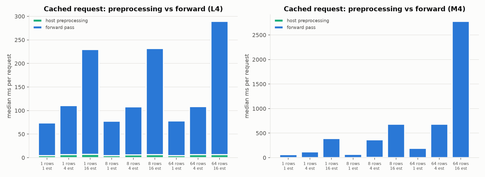
Host preprocessing (sklearn transforms, pandas) is the green sliver: only 4–7 ms per request on the L4.
The forward pass takes 70–280 ms on the L4, and at a fixed member count it barely moves between 1 and 64 rows.
So the time is Python dispatch and kernel launches: 24 layers × dozens of ops × members. That's what compilation removes. (The M4 is compute-bound: its forward grows with rows.)
Key idea: small requests on a big GPU are overhead-bound: the fix is fewer kernel launches, not faster maths.
Graphs are specialised to shapes. A new input shape means a new compile (seconds to minutes). CUDA graphs also pin memory addresses, so inputs are copied into fixed buffers.
So servers bucket and warm up: pad each batch to one of a few shapes (here 9 powers of two, 1 to 256 rows) and compile all of them before accepting traffic.
Two different Tritons: Inductor writes its GPU kernels in OpenAI's Triton language. NVIDIA Triton Inference Server (section 4) is an unrelated serving product.
In production: compilation moves cost from every request to start-up. Here the deployed warm-up took 20–23 min per cold replica, which matters as soon as you autoscale (section 5).
Key idea: compile when you are overhead-bound, and pay the compile once, before traffic, not on the first user's request.
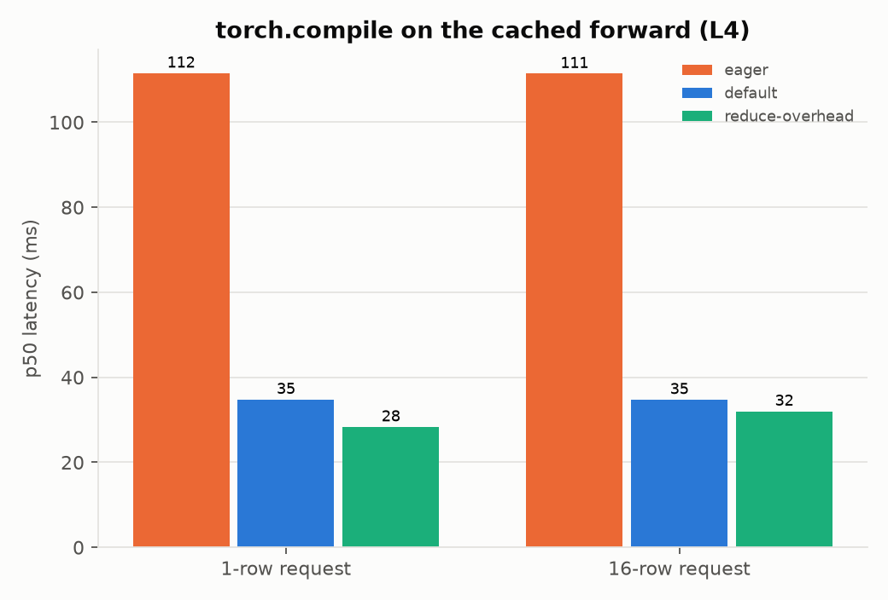
Cached forward on the L4 (512 context rows, 4 members):
| Mode | p50 1 row | p99 1 row | p50 16 rows |
|---|---|---|---|
| eager | 111.5 ms | 133.7 ms | 111.4 ms |
| default | 34.8 ms | 41.6 ms | 34.7 ms |
| reduce-overhead | 28.3 ms | 32.6 ms | 32.0 ms |
reduce-overhead = torch.compile plus CUDA graphs. The eager floor was kernel-launch overhead, not GPU compute.
Tail improved too: p99 133.7 → 32.6 ms for a 1-row request.
n_rows = members.shape[1]
if self.bucket_rows:
padded = 1 << max(0, (n_rows - 1).bit_length())
members = np.pad(members, ((0, 0), (0, padded - n_rows), (0, 0)))
def warm_up(self, max_rows: int) -> float:
…
t0 = time.perf_counter()
n = 1
while n <= max_rows:
self.predict_proba(pd.concat([self._example_row] * n, ignore_index=True))
n *= 2
synchronize(self.device)
return time.perf_counter() - t0
Still exact: 1,024 context rows × 8 members, 256 query rows in bucketed batches of 37, bf16 on the L4.
| Comparison | max |Δp| | labels |
|---|---|---|
| eager cache vs stock | 0.032 | 100% |
| compile default vs eager cache | 0.042 | 100% |
| reduce-overhead vs eager cache | 0.017 | 100% |
The price is warm-up: compiling 9 row buckets (1…256) took 433 s in a fresh process; deployed
reduce-overhead capture took 20–23 min. Persist TORCHINDUCTOR_CACHE_DIR on a volume, bake cache artifacts into the image, or use dynamic shapes.
Warm up on the serving thread: CUDA-graph trees are recorded per thread, so the engine fits, encodes and warms up on the executor thread that will serve the context.
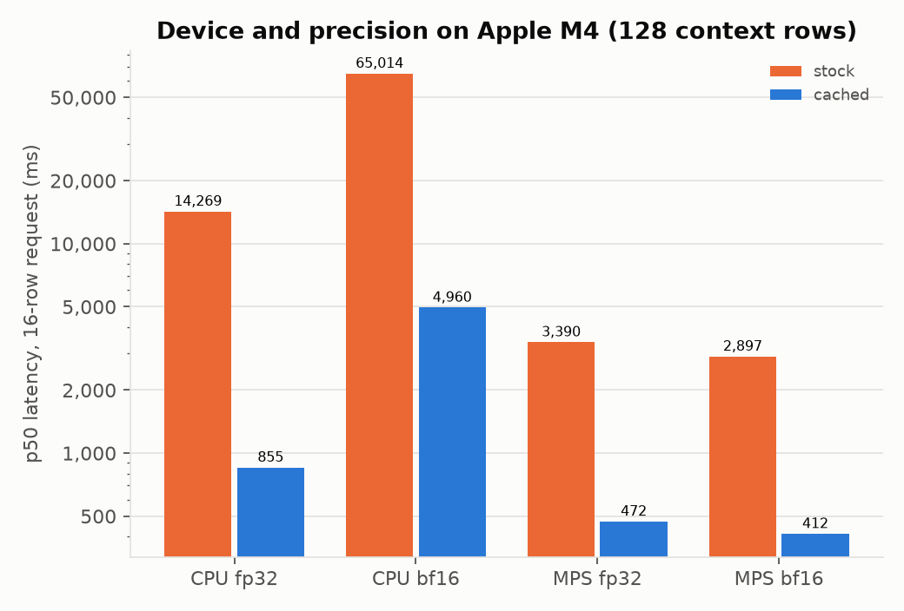
What it shows: Apple M4, 128 context rows, 16-row request, stock vs cached across CPU/MPS × fp32/bf16.
CPU: bf16 is 5–11× slower than fp32 (cached 4,960 vs 855 ms; stock 65,014 vs 14,269 ms). ARM CPUs have no fast bf16 matrix kernels. On MPS the two are close.
Cold-start trick: ltm-serve export-checkpoint writes pre-cast weights; loading builds on the meta device. CPU load 0.75–1.34 s vs 22.5–27.5 s stock (safetensors mmap defers page faults to the first forward).
Key idea: the model's default precision was the wrong choice on ARM CPUs. bf16 on the L4, fp32 on ARM CPUs.
1. Latency is the same for 1 and 64 rows per request. Which is more likely to help: lower precision, or compilation?
Compilation. Flat latency means overhead-bound, so fewer kernel launches matter; lower precision speeds up compute that isn't the bottleneck.
2. Why does the context cache give 74× at 8,192 context rows but only 1.8× at 64?
It removes the context's share of the work, which is small for a small table. The per-query work and launch overhead remain either way.
3. Why does the compiled service pad a 37-row batch to 64 rows, and why is that safe?
Compiled graphs and CUDA graphs are specialised to shapes, so padding reuses one of 9 pre-warmed buckets. It is exact because rows never attend to each other.
Try it: uv run ltm-serve bench context_scaling member_batching --device mps. The compile sweep needs --device cuda; on a GPU compare its three modes with the table in this section.
An API shaped by the model, a batcher that is exact, and a load test you can believe.
Service time: work done on your behalf: preprocessing, the forward and serialisation. Roughly fixed for a given batch shape.
Queue wait: time spent waiting because the model was busy with earlier requests. Near zero at low load; the dominant term near saturation.
Measure them separately. The FastAPI service exports ltm_queue_wait_seconds and ltm_inference_seconds, so a slow p99 can be attributed to one or the other.
Who does each step: in the FastAPI service, one Python process does everything from parsing to splitting. In Triton, the front end, queue and batcher are C++, and only preprocess, forward and splitting run in Python. That difference decides the results in section 5.
Key idea: when latency rises under load, first ask whether requests are waiting or working.
| Utilisation ρ | Mean time in system |
|---|---|
| 50% | 2 × service time |
| 80% | 5 × |
| 90% | 10 × |
| 95% | 20 × |
Single-server queue with random arrivals (M/M/1): T = S / (1 − ρ). An intuition for the shape, not a model of a batching server.
| Offered | Achieved | p99 |
|---|---|---|
| 80 req/s | 81 | 381 ms |
| 160 req/s | 161 | 673 ms |
| 240 req/s | 239 (13 dropped) | 850 ms |
| 320 req/s | 285 (941 dropped) | 2,045 ms |
From 80 to 240 req/s p99 grows 2.2×; one more step and it grows another 2.4× while requests are dropped.
Why it curves: arrivals are random. At high utilisation a short burst builds a queue, and the server has almost no idle time left to drain it, so waits compound.
The knee: the load where latency starts rising steeply. In this deck, the knee is the first offered rate at which requests are dropped or achieved throughput falls below offered.
Key idea: never plan to run at the knee. Capacity is the highest load that still meets the p99 target, with headroom for bursts.
No batching: one request per forward. Simple, but the GPU idles between tiny calls and throughput is capped by one forward's latency.
Static batching: wait until N requests arrive. High throughput, but at low load the first request waits for strangers who may not come.
Dynamic batching: when the model frees up, take everything that queued meanwhile, up to a cap. Optionally wait a few ms for more.
Eager Triton on the L4 took ~190 ms per forward. At 400 req/s, about 400 × 0.19 ≈ 76 requests arrive during each forward, and all of them go into the next batch. Triton's own metrics showed ~73 requests per batch at 400+ req/s and ~21 at 240. That is how one eager instance kept up with 400 req/s.
The knobs: a maximum batch size (bounds memory and compiled shapes) and a maximum queue delay (extra wait for fuller batches). This project uses a delay of 0.
LLM servers go further: they add and remove sequences between generated tokens (iteration-level batching). One forward answers a TabFM request, so request-level batching is enough.
Key idea: batching is only safe when requests can't influence each other. For TabFM the attention masks guarantee it; for many models it must be checked.
Weights + table = the model: POST /v1/contexts returns an id that predictions reference.
LRU bounded by cache bytes, not a count. One executor thread per process, so contexts never contend on the device.
Two APIs, one engine: native JSON and Open Inference Protocol v2, which Triton and KServe also speak.
…
batch = [first]
n_rows = len(first.rows)
deadline = first.enqueued + self.max_delay_s
while n_rows < self.max_rows:
timeout = deadline - time.perf_counter()
try:
if timeout <= 0:
item = self.queue.get_nowait()
else:
item = await asyncio.wait_for(self.queue.get(), timeout)
except (asyncio.QueueEmpty, TimeoutError):
break
if n_rows + len(item.rows) > self.max_rows:
…
self._carry = item
break
No deliberate wait by default. With LTM_MAX_DELAY_MS=0 it still merges everything that queued during the previous batch: the throughput win is free, the latency cost is opt-in.
Capped at LTM_MAX_BATCH_ROWS so batches stay inside warmed-up shape buckets; a request that doesn't fit carries over to the next batch.
Metrics: request latency, queue wait, per-batch inference time, batch size in rows and requests, in-flight requests (the autoscaling signal), cache bytes.
A closed loop with 4 workers sends nothing during the freeze, so only its 4 in-flight requests record the delay. An open loop keeps sending, so ~160 requests arrive into the freeze and each records the wait a real user would have had. The p99 differs enormously.
Coordinated omission (Gil Tene's term): the client coordinates with the server and omits exactly the slow samples that matter. Open-loop tools measure from the scheduled send time to avoid it.
Open loop has its own trap: the client must keep to its own schedule. If it can't send fast enough, its backlog is recorded as server latency. That happened twice in this project (two slides on).
Key idea: a latency number is only as honest as the load generator: open loop, measured from the scheduled time, with a client proven not to be the limit.
while next_at - start < spec.duration_s:
now = time.perf_counter()
if next_at > now:
await asyncio.sleep(next_at - now)
if inflight >= spec.max_inflight:
dropped += 1
else:
inflight += 1
tasks.append(asyncio.create_task(one(next_at, bodies[i % len(bodies)])))
i += 1
next_at += rng.exponential(1.0 / spec.rate)
async def one(scheduled: float, body: bytes) -> None:
…
resp = await client.post(path, content=body, headers=headers)
done = time.perf_counter()
…
latencies.append(done - scheduled)
Closed loop hides the problem. With N workers each waiting for a reply, the client slows down exactly when the server does, so queueing delay never shows up (coordinated omission).
Open loop: requests go out at the offered rate regardless of replies, and each latency starts at next_at, the time it should have been sent.
Make the client cheap: request bodies are pre-serialised, and the load runs across processes with --procs, each an independent Poisson stream.
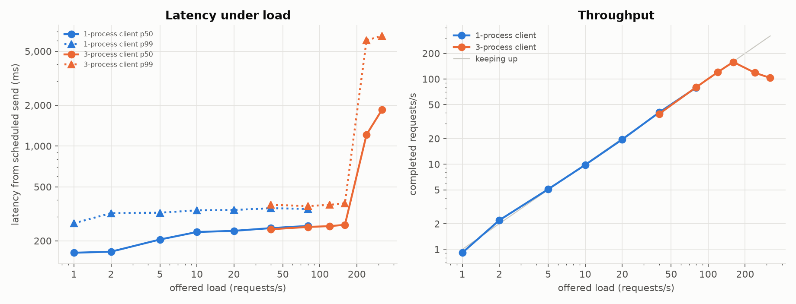
Symptom: with one client process, Triton looked like it collapsed at 160 req/s: 43 req/s completed, p50 4.9 s. (The blue 1-process curve is plotted up to 80 req/s.)
But the server disagreed: Triton's own metrics showed an empty queue and a GPU at 30% utilisation.
Fix, twice: pre-serialised bodies and 3 processes (orange) held 160 req/s at p50 262 ms, then "collapsed" at 240: still the client. With 4–6 processes (green) the same server held 400 req/s.
Key idea: always check the server's own queue and utilisation before believing a load test's saturation point. The second collapse made it into the first write-up as a Triton result; an independent re-run caught it.
Model repository and backend: a directory per model with a config.pbtxt. The backend runs it: TensorRT, ONNX Runtime, PyTorch, or Python (used here, so TabFM's own code runs).
Instances and dynamic batcher: how many copies of the model run and on which devices, plus a queue per model that merges requests before each call.
Front end and operations: HTTP and gRPC in C++ speaking the Open Inference Protocol v2 (which KServe also uses), Prometheus metrics on :8002, and an API to load and unload models.
def execute(self, requests: list[Any]) -> list[Any]:
…
arrays = [pb_utils.get_input_tensor_by_name(r, "ROWS").as_numpy() for r in requests]
sizes = [a.shape[0] for a in arrays]
…
proba = self.classifier.predict_proba(pd.DataFrame(np.concatenate(arrays), columns=self.columns))
…
for n in sizes:
out = pb_utils.Tensor("PROBABILITIES", proba[offset : offset + n].astype(self.output_dtype))
responses.append(pb_utils.InferenceResponse(output_tensors=[out]))
offset += n
…
return responses
Key idea: you write execute(requests) → responses; the server owns networking, queueing, batching, placement and metrics.
max_batch_size: 256
…
dynamic_batching {
max_queue_delay_microseconds: 0
}
…
instance_group [
{
count: 1
kind: KIND_CPU
}
]
Batch dimension = query rows. Dynamic batching merges concurrent requests into one execute(), exact because rows are independent. KIND_CPU is swapped to KIND_GPU at image build time.
Context as model. The training table is fixed per Triton model and encoded in initialize(). Different tables become different models, so Triton's lifecycle management doubles as the context registry, with a queue and metrics per context.
Explicit model control: POST /v2/repository/models/tabfm/load with a config override changed the instance count from 1 to 2 in 22.5 s, with no pod restart or image rebuild.
Metrics on :8002 showed batching directly: up to 80 req/s, 4,767 requests ran in 954 executions (~5 per batch). They also located the bottleneck later.
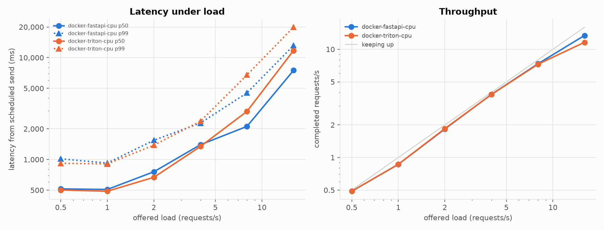
Setup: plain Docker on the M4, 512 context rows × 4 members, 1-row requests, client through Docker Desktop port forwarding.
Ready in 42.2 s (FastAPI) and 51.2 s (Triton): weights 2.1 s / 1.0 s from the exported checkpoint, context encode 35.4 s / 44.8 s. Outputs agree to 7e-7.
Batching kept them afloat: FastAPI ran 1,244 requests in 215 batches, Triton 1,192 in 204 executions. At 16 req/s both are past saturation (Triton dropped 49).
Key idea: on a slow device, batching is not an optimisation but the only reason the service keeps up at all.
1. Latency jumps at 240 req/s, but the server's queue is empty and its GPU is 30% busy. What do you do?
Suspect the client. Pre-serialise request bodies, add client processes, and re-run until the knee stops moving.
2. How did one eager Triton instance with a ~190 ms forward keep up with 400 req/s?
Dynamic batching: ~73 requests merged per forward, so throughput ≈ batch size ÷ forward time ≈ 73 ÷ 0.19 s.
3. Why does a closed-loop benchmark under-report p99 latency?
Its workers stop sending while they wait, so few requests experience a stall: coordinated omission.
Try it: start the service with LTM_DEVICE=mps LTM_DEMO_CONTEXT="demo:n_train=512,n_features=10,n_classes=2,n_estimators=4" uv run uvicorn ltm_serve.service.app:app --port 8080
then load it with uv run python -m ltm_serve.loadgen --url http://localhost:8080 --model demo --rates 1,2,4 --duration 30. Add --procs 2 and check the knee doesn't move.
KServe on kind locally, then GKE with one NVIDIA L4: cold starts, bottlenecks that move, and quota.
Pod: one or more containers scheduled together on a node. The model server runs in one.
Deployment: keeps N identical pods running and replaces them on updates (rolling, or Recreate).
Service: a stable address that load-balances across the pods that pass their readiness probe.
Node pool: a group of identical VMs. Here g2-standard-8 with one L4, scaling from 0 to 2 nodes.
Taints and tolerations: GPU nodes repel ordinary pods; only pods that tolerate the taint and request nvidia.com/gpu land there.
Two autoscalers: the HPA changes the number of pods; the cluster autoscaler adds nodes when pods are Pending.
gcloud container node-pools create l4 --project "$PROJECT" --cluster "$CLUSTER" --zone "$ZONE" \
--machine-type g2-standard-8 --accelerator type=nvidia-l4,count=1,gpu-driver-version=latest \
--enable-autoscaling --num-nodes 0 --min-nodes 0 --max-nodes 2 \
--node-taints nvidia.com/gpu=present:NoSchedule --enable-image-streaming
Key idea: pods scale in seconds; GPU nodes scale in minutes, and only as far as your quota allows.
Standard mode (used here): KServe creates a plain Deployment and Service; no Knative or Istio in the request path.
Weights outside the image: the same image serves any checkpoint in the bucket, and the image stays smaller.
KEDA runs a Prometheus query and feeds the result to the HPA. Signal: average in-flight requests per pod, target 8.
autoScaling:
metrics:
- type: External
external:
metric:
backend: prometheus
…
# Average in-flight requests per ready replica over the last 30 s.
query: avg(avg_over_time(ltm_inflight_requests{namespace="ltm"}[30s]))
target:
type: Value
value: "${TARGET_INFLIGHT}"
Key idea: scale a GPU service on its backlog (in-flight or queued requests), which measures demand directly; CPU usage of a GPU server says little about it.
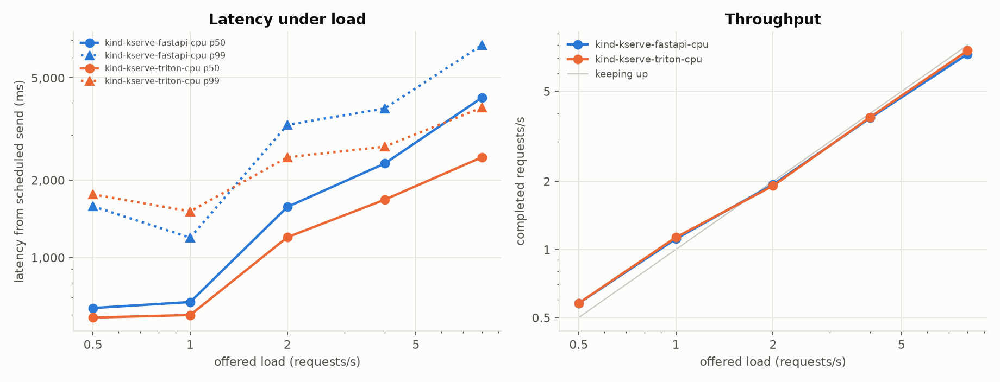
Setup: KServe v0.20 in Standard mode on kind. Weights on a hostPath PVC (pvc://, mounted without a copy): apply → Ready in 66 s (FastAPI) and 71 s (Triton), ~56 s of it context encoding.
Both keep up to 8 req/s, but Triton's tail is clearly better: p99 3.8 s vs 6.7 s at 8 req/s.
Why: Triton's HTTP front end is C++; FastAPI parses JSON in the same Python process that runs the model. (Client via kubectl port-forward; one node hosts everything.)
deploymentStrategy:
type: Recreate
…
imagePullPolicy: Always # the tag is reused across Cloud Build runs; IfNotPresent would keep a stale image
…
- name: LD_LIBRARY_PATH
value: /usr/local/nvidia/lib64
…
startupProbe:
…
failureThreshold: 360 # 30 min: compile warm-up of 9 row buckets alone took ~7 min on an L4
…
resources:
requests: { cpu: "3", memory: 20Gi, nvidia.com/gpu: "1" }
limits: { cpu: "7", memory: 26Gi, nvidia.com/gpu: "1" } # explicit: KServe otherwise injects cpu: 1
Recreate: with one GPU, a rolling update surges a new pod that stays Pending forever.
Pull Always: a reused tag cached on the node would silently run the previous image. Or deploy by digest.
LD_LIBRARY_PATH: slim images don't point at GKE's driver mount: "Found no NVIDIA driver".
Startup probe budget: 30 min. The ~7 min comment was the standalone compile; the deployed pod took 23 m 53 s.
Explicit CPU limit: KServe injects cpu: 1, rejecting requests of 3 and throttling silently.
Eager Triton InferenceService on GKE, from zero GPU nodes to Ready: 7 m 12 s. Box widths are proportional to time (timeline from pod events).
Shrink the image: slim base images, weights outside the image, image streaming. Dropping unused CUDA wheels cut the pull from 3 m 31 s to 1 m 49 s.
Skip the node: keep minReplicas ≥ 1 on a warm node. A warm restart (node up, image cached) took ~1 min.
Compiled replicas add a leg: 1,221–1,372 s of CUDA-graph capture, unless the compile cache is persisted (206 s when it was reused).
In production: scale-to-zero on GPUs means the first request after idle waits minutes. For a latency SLO, keep warm capacity and plan scale-out minutes ahead.
Key idea: the model's own work (weights to the GPU and context encoding) took 29 s of the 7 m 12 s; the rest was nodes, downloads, the image and imports.
| Variant (apply → Ready) | Node | Image pull | Model init | Total |
|---|---|---|---|---|
| Triton eager, first deploy | new L4 55 s + GPU plugin 37 s | 13.6 GB, 3 m 31 s | 39 s import + 25 s weights + 4.4 s encode | 7 m 12 s |
| Triton eager, warm restart | already up | cached | same | ~1 min |
| Triton eager, slim image | already up | 12.8 GB, 1 m 49 s | 17 s weights + 2 s encode | 3 m 11 s |
| FastAPI eager | already up | 4.7 GB | 20 s weights + 2 s encode | ~1 min |
| FastAPI compiled, slim image | already up | 4.0 GB, 2 m 05 s | 21 s weights + 2 s encode + 1,221 s capture | 23 m 53 s |
| Triton compiled, 1 instance | already up | 13.6 GB, 3 m 17 s | 26 s weights + 4.4 s encode + 1,372 s capture | 28 m 11 s |
| + 2nd instance via repository API | same pod | – | 206 s (inductor cache on disk reused) | +3 m 26 s |
Weights are small by comparison: 3.3 GB from GCS via KServe's storage initializer took 45 s. Weights to GPU plus context encode: under 30 s.
Slim the image: dropping the CUDA 13 wheels a broken filter had kept cut Triton 13.6 → 12.8 GB and the pull 3 m 31 s → 1 m 49 s.
Scale-to-zero on GPUs means paying 1–7 minutes on the first request. Image streaming was on, but a freshly pushed image still pulled in full.
Key idea: the image dominates an eager cold start and compilation dominates a compiled one; loading weights and encoding the context are small by comparison on a GPU.
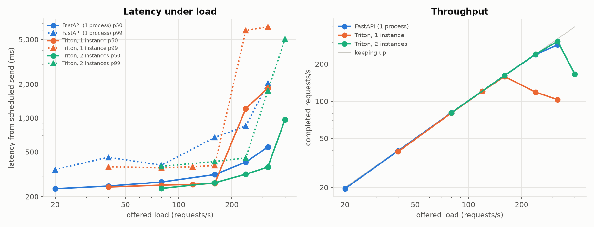
Setup for all GKE runs: 1× L4, 1,024 context rows, 10 features, 8 members, bf16, 1-row OIP v2 requests, open-loop client in-cluster.
Triton, 1 instance: p99 380 ms at 160, 447 ms at 320 req/s, drops start ~400. The pod sits on one core (one Python-backend process, one GIL) with the GPU under-utilised, yet keeps up: the dynamic batcher merges ~21 requests per forward at 240 req/s and ~73 at 400+.
A 2nd instance on the same GPU added nothing (~300 req/s, p99 1.75 s at 320; that run used a 4-process client). FastAPI reached ~285 req/s via ~25-request batches, with a worse tail: p99 673 vs 380 ms at 160 req/s.
Key idea: the first version of this slide said "collapses at ~160, 2nd instance doubles capacity". That was a 3-process client. One idle core is not proof of a host bottleneck; a real knee needs a client you have proven is not the limit.
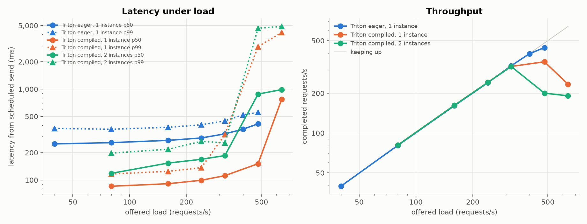
Compiled, 1 instance: p50 91 / p99 125 ms at 160 req/s, knee ~350 req/s. Eager was 273 / 380 ms with a knee of ~400: 3× lower latency at a similar capacity, and p99 138 vs 405 ms at 240 req/s.
2 instances never helped. Compiled, the GPU is the limit, so they only time-slice it: smaller batches, interleaved CUDA graphs, slower at every load (154 / 218 ms at 160 req/s). Eager, the 2nd instance was slightly slower too.
The cost: capturing 9 row buckets took 1,372 s in the first instance (28 min to Ready). The 2nd instance took 206 s because inductor's on-disk cache was reused.
Key idea: instance count per GPU has to be measured, not derived from "one GIL". Here one instance won in both modes, and compilation bought latency rather than throughput. Re-measure after every change.
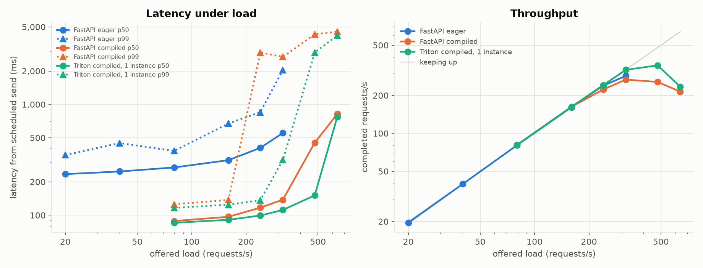
Same ~3× latency cut: p50 97 / p99 137 ms at 160 req/s (eager 314 / 673 ms). But the knee fell from ~285 to ~230 req/s.
Why: during overload the pod used 1.05 CPU cores for JSON parsing, the asyncio loop, pandas preprocessing and batch bookkeeping. With ~66 ms GPU batches (37,663 requests in 2,903 batches), host work is the ceiling. Eager's ~190 ms batches hid it.
Compiled Triton (green) reached ~350 req/s on the same GPU: its HTTP/gRPC front end and scheduler are C++, and the Python stub only receives tensors.
Key idea: at high throughput, keep request handling out of the model's Python process.
| Step | Bottleneck | Evidence | What moved it |
|---|---|---|---|
| Stock model | re-encoding the table on every request | latency grows with context rows (slope 1.12) | exact context cache: 9.47 s → 129 ms |
| Cached forward | Python launching kernels | flat from 1 to 64 rows; preprocessing only 4–7 ms | torch.compile + CUDA graphs: 111 → 28 ms |
| First load tests | the load generator | Triton's queue empty, GPU ~30% busy | pre-serialised bodies, 4–6 client processes |
| Compiled FastAPI | one Python process (1.05 cores) | knee fell from ~285 to ~230 req/s | C++ front end: compiled Triton ~350 req/s |
| Compiled Triton | the GPU | a 2nd instance was slower at every load | one instance per GPU; scale with GPUs |
| Scale-out | GPU quota | “GCE quota exceeded” | quota and reservations belong in the design |
Key idea: re-measure after every change. The right number of instances and even the right framework changed as the bottleneck moved.
FastAPI at min 1 / max 2 replicas, constant 240 req/s for 4 minutes.
Key idea: in real GPU serving the binding constraint is often capacity and quota, not the autoscaler config. Reservations, quota and fallback pools are part of inference architecture.
1. A rolling update of a single-GPU InferenceService hangs with a Pending pod. Why, and what is the fix?
A rolling update starts the new pod before stopping the old one, and the new pod needs a GPU that doesn't exist. Use deploymentStrategy: Recreate.
2. Cold start from zero nodes took 7 m 12 s. What was the largest part, and what would you change first?
The 13.6 GB image pull (3 m 31 s). Slim the image, keep weights out of it, and keep a warm node with minReplicas ≥ 1.
3. Why did a second compiled Triton instance on the same GPU make latency worse?
Compiled, the GPU was the bottleneck, so two instances only time-sliced it with smaller batches. More instances help only when something else is the limit.
Try it: k8s/gke/up.sh, then k8s/gke/run.sh k8s/gke/isvc-triton-gpu.yaml, then k8s/gke/down.sh. This is billed until down.sh finishes (roughly $0.85/h per L4 node, plus the system node and images).
The decision doc you'd bring to a design review, a capacity model, everything that went wrong, and a glossary and reading list for reference.
1. Separate context and weights. Weights are shared and immutable; contexts are per-tenant and memory-heavy. Byte budget, LRU, route by context id.
2. Encode once, serve many. Make context registration explicit and asynchronous; requests never re-encode. Worth 2–74× depending on context size.
3. Choose ensemble size from measured quality, and batch all members in one forward.
4. Remove Python from the hot path, in order: compile with shape buckets and warm-up (4×); HTTP/JSON out of the model process; more instances only if measured (here they never paid off).
5. Batch by default. Measure max_queue_delay rather than guess it: at 0 ms, merging under load already gave 5–25 requests per batch.
6. Pick the runtime per constraint: Triton for tail latency per GPU; KServe for Kubernetes lifecycle, storage and autoscaling; FastAPI for iteration speed and custom APIs.
7. Plan cold starts and capacity explicitly. minReplicas ≥ 1 for latency SLOs, slim images, weights outside the image, quota and reservations.
8. Build a capacity model from measurements, and re-measure after every optimisation, because the bottleneck moves (next slide).
Assumptions: 1,024 context rows, 10 features, 8 members, 1-row requests, bf16, one L4, compiled Triton with 1 instance. Arithmetic: 1,000 ÷ 240 ≈ 4.2, so 5 GPUs, plus 1 so the fleet survives losing one (N+1).
Optimisation made the SLO reachable at all. No eager configuration meets it at any fleet size (p99 ≥ 360 ms even at 80 req/s); stock TabFM without the cache takes ~860 ms per request here.
Many tenants hit memory first. The context byte budget, not QPS, is the first limit: shard contexts across replicas and route by context id.
Scale-out is slow: 3–7 min eager (image-dominated), 28 min compiled without a persisted compile cache. Keep minReplicas at peak minus burst.
| Problem | Symptom | Fix / lesson |
|---|---|---|
| Another process on the laptop | Mac sweeps 2–7× slower; cached 1-row 879 ms instead of 128 ms | Check what else is running; keep contended results separate; re-run |
| Load-generator bottleneck, twice | "Saturation" at 160 req/s (1 client process), then a "collapse" at 240 (3 processes), Triton's queue empty, GPU ~30% | Pre-serialised bodies, 4–6 client processes; read the server's queue and utilisation. The 2nd one reached the write-up before a re-run caught it |
| Synthetic task too easy | Accuracy flat at 97% for every ensemble size | Harder task (class_sep=0.5) plus log loss; still flat, a real finding |
Library default batch_size=1 | Ensemble members run one by one | Batch all members: 5× on the L4 |
| bf16 on ARM CPU | 5–11× slower than fp32 | Choose precision per target |
| Triton Python backend GIL | GPU ~30% utilised, pod at 1 core | Not the limit at ≤400 req/s (batches grow to ~70 requests); compile to cut dispatch 3×; a 2nd instance never helped |
| Compile warm-up | 433 s to compile 9 shape buckets in a fresh process | Budget it in startup probes; persist the inductor cache |
triton/ dir in repo root | import triton picked up the directory and broke torch._dynamo | Renamed to triton_models/: nothing in the repo root may shadow a real package |
| Problem | Symptom | Fix / lesson |
|---|---|---|
| CUDA 13 wheels in every image | Filter regex required == right after nvidia-; CPU image 7.86 GB | Fixed docker/requirements.sh: CPU 1.85 GB; GPU service 4.7 → 4.0 GB |
| No C compiler for torch.compile | InductorError: Failed to find C compiler | Install gcc in CUDA service images |
| GPU driver not found | RuntimeError: Found no NVIDIA driver in python:3.12-slim | LD_LIBRARY_PATH=/usr/local/nvidia/lib64 |
| KServe default CPU limit | requests.cpu: 3 must be ≤ cpu limit of 1 | Always set limits.cpu (else silent throttling) |
| Rolling update, one GPU | New pod Pending forever; "GCE quota exceeded" | deploymentStrategy: Recreate |
| Reused image tag | A redeploy would have run the previous, node-cached image | imagePullPolicy: Always, or deploy by digest |
| Bare Pods for bench jobs | L4 node could not scale to zero while an idle bench pod existed | safe-to-evict: "true" or Jobs; delete once results are copied |
| Prometheus crash loop | global scrape timeout greater than scrape interval | Set scrape_timeout below a short scrape_interval |
| kind rewrites current-context | Kubeconfig switched from the GKE context to kind-ltm | Every script passes --context explicitly |
| GPU quota increase denied | No real 1 → 2 GPU scale-out | Documented the autoscaling chain up to the quota failure |
| Term | Meaning here |
|---|---|
| Bucket | one of a few fixed input shapes a batch is padded to, so compiled graphs are reused |
| Cold start | time from asking for a replica to it serving: node, image, weights, warm-up |
| Context | the labelled training table TabFM reads at prediction time |
| Context cache | the training rows' K, V and inducing-point states, computed once per context |
| Coordinated omission | a load test's bias when the client slows down with the server and skips slow samples |
| CUDA graph | a recorded sequence of GPU kernels, replayed with one launch; fixed shapes and memory |
| Term | Meaning here |
|---|---|
| Dispatch overhead | CPU time Python and PyTorch spend choosing and launching each kernel |
| Dynamic batching | merging requests that queued while the model was busy into the next forward |
| Eager mode | PyTorch's default: run each op as Python reaches it, one kernel launch per op |
| Ensemble member | one of TabFM's views of the table (shuffles, shifts); predictions are averaged |
| In-flight requests | requests received but not yet answered; the autoscaling signal here |
| Instance (Triton) | one copy of a model inside the server, with its own process and memory |
| Term | Meaning here |
|---|---|
| Knee | the first offered load where requests drop or achieved falls below offered |
| Noise floor | how much a model's outputs change on their own, e.g. with batch composition |
| Offered / achieved load | the rate clients send / the rate that completes |
| Open / closed loop | requests sent on a clock / sent only after the previous reply |
| OIP v2 | Open Inference Protocol: the tensor API Triton, KServe and this service all speak |
| p50 / p99 | latency that 50% / 99% of requests beat |
| Term | Meaning here |
|---|---|
| Python backend | a Triton backend that calls your execute() for each batch |
| Quota | a cloud project's cap on resources such as GPUs; here 1 L4 |
| Readiness / startup probe | Kubernetes checks that gate traffic and give slow starts time |
| SLO | a promised target, such as p99 < 150 ms |
| Storage initializer | KServe's init container that downloads a model's weights before the server starts |
| Warm-up | running every bucket once before reporting ready, so no user pays for compilation |
docs/WRITEUP.md has every number in this deckdocs/WRITEUP.md: every phase, number and decisiondocs/local_phase.md: the CPU, Docker and kind + KServe phasesrc/ltm_serve/context_cache.py: the exact KV cachesrc/ltm_serve/service/engine.py: context registry and batcheruv sync --all-extras uv run ltm-serve bench context_scaling stages --device mps # or --device cuda uv run ltm-serve plots … k8s/gke/up.sh # cluster, KServe, KEDA, Prometheus, Cloud Build k8s/gke/run.sh k8s/gke/isvc-triton-gpu.yaml k8s/gke/down.sh # delete everything billable